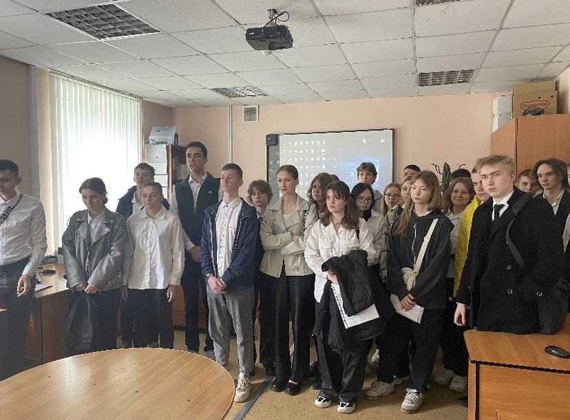
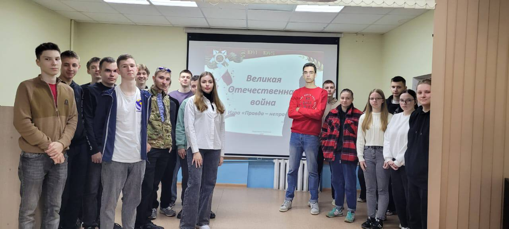
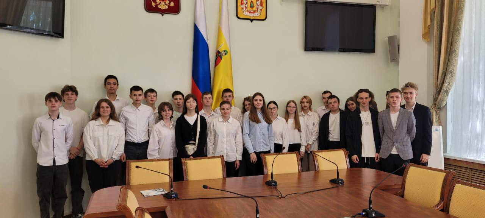

Я учусь на первом курсе в Российском колледже экономики (РКЭ) по специальности ИС-107 (информационные системы). Начало обучения стало для меня важным шагом в направлении моей будущей карьеры.
Одним из самых запоминающихся моментов первого курса стали наши лабораторные работы. Мы работали с реальными программными продуктами и учились решать реальные задачи, с которыми сталкиваются специалисты в области информационных систем. Это дает мне уверенность в том, что я выбрал правильный путь и в будущем смогу стать квалифицированным специалистом.
Кроме учебы, в колледже есть много возможностей для внеучебной деятельности. Я уже успел поучаствовать в нескольких студенческих мероприятиях и кружках. Это помогает развиваться не только в профессиональном плане, но и как личность, находить новых друзей и единомышленников.
 